Giving was disconnected
There was no clear online donation path, and missing tax-deductible information reduced confidence.
Case study 01 · UX research & product design
Redesigning a community nonprofit website so donors, volunteers, and neighbors seeking assistance can act with confidence.
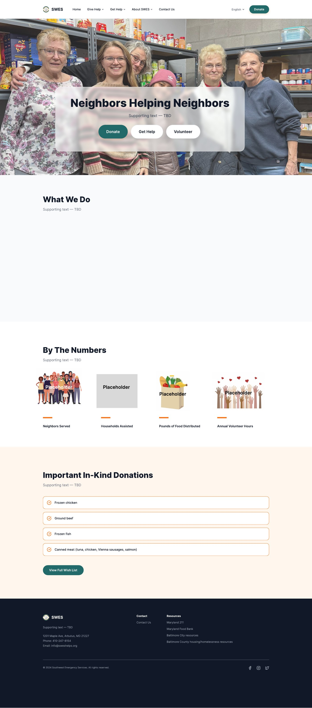
Overview
Southwest Emergency Services (SWES) is a Christian-based nonprofit serving individuals and families through food, personal-care items, and financial assistance. Its existing website supported basic navigation, but it did not fully support the actions people came to complete.
The project focused on a research-led website redesign. The goal was to make donation, assistance, and volunteer information easier to find while creating a foundation for future digital giving and content management.
Core challenge
How might we help each audience quickly understand where to go, what they need, and how to take the next step?
Research
I combined a stakeholder survey, three semi-structured interviews, heuristic review, and organizational analysis to understand both visitor needs and internal constraints.
There was no clear online donation path, and missing tax-deductible information reduced confidence.
Visitors needed clearer eligibility, hours, location, and next-step information for assistance.
Roles, requirements, schedules, and application steps were too general or absent.
Internal stakeholders described difficulty editing and updating content with the existing tools.
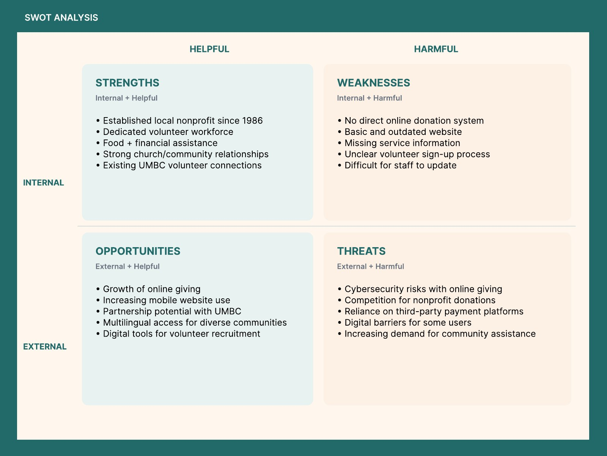
Audiences
The personas translated research patterns into concrete goals: get help without uncertainty, donate without unnecessary friction, and volunteer without guessing.
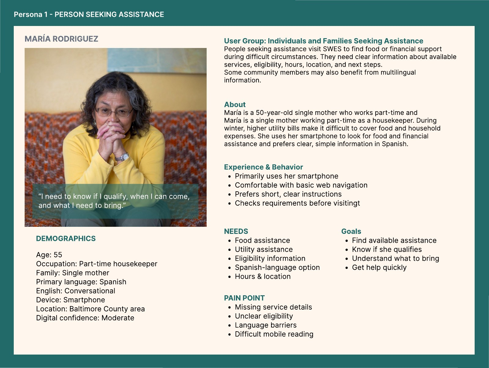
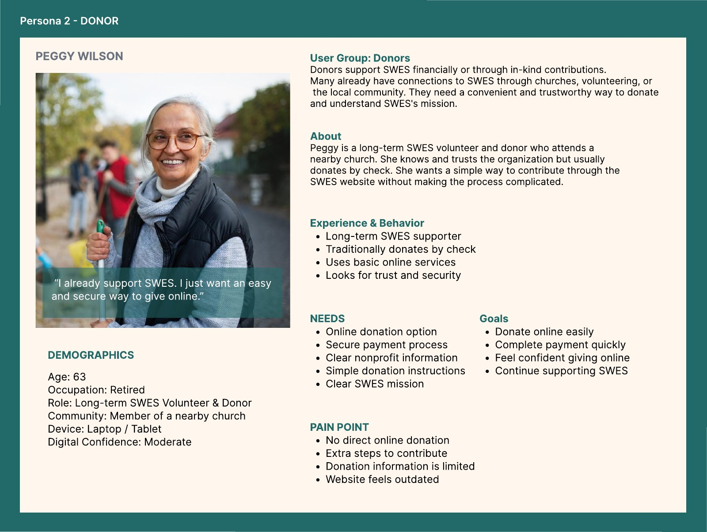
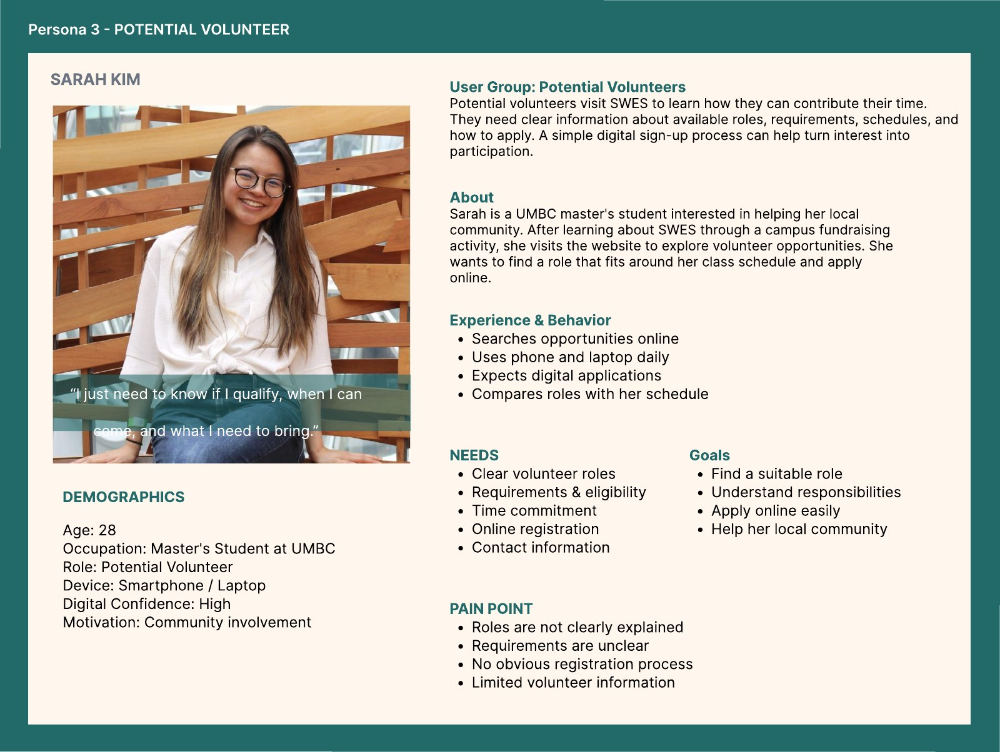
Definition
The research showed that the central problem was not navigation alone. Missing functionality, incomplete information, and unclear content structure prevented people from completing important tasks.
How might we make giving easy, accessible, and trustworthy?
How might we make service information clear and easy to access?
How might we communicate opportunities, requirements, and next steps?
How might we improve clarity without adding complexity?
Design process
I reorganized the experience around five plain-language destinations—Give Help, Get Help, My Story, About, and Contact—then explored the core donation and volunteer journeys in low fidelity.
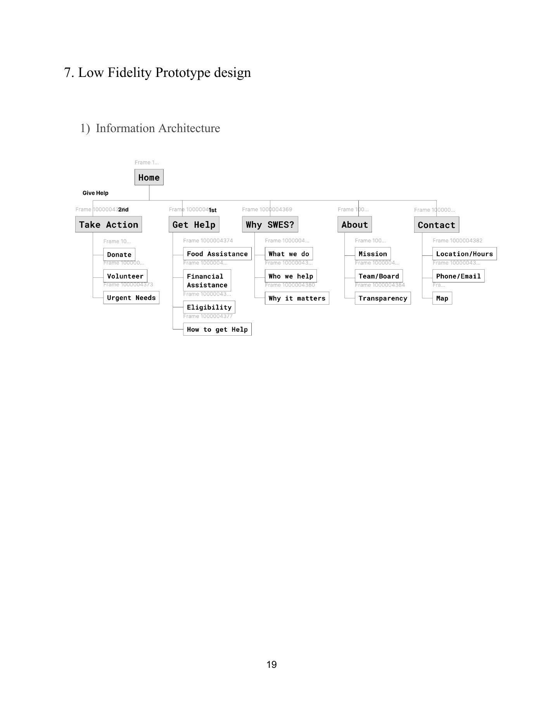
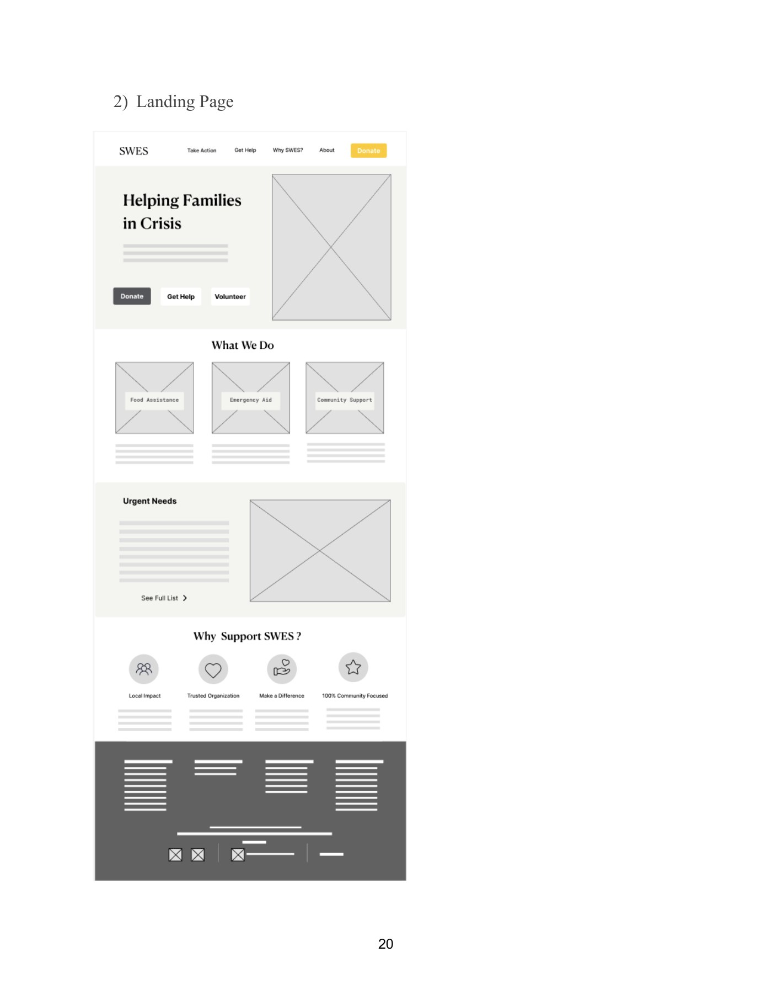
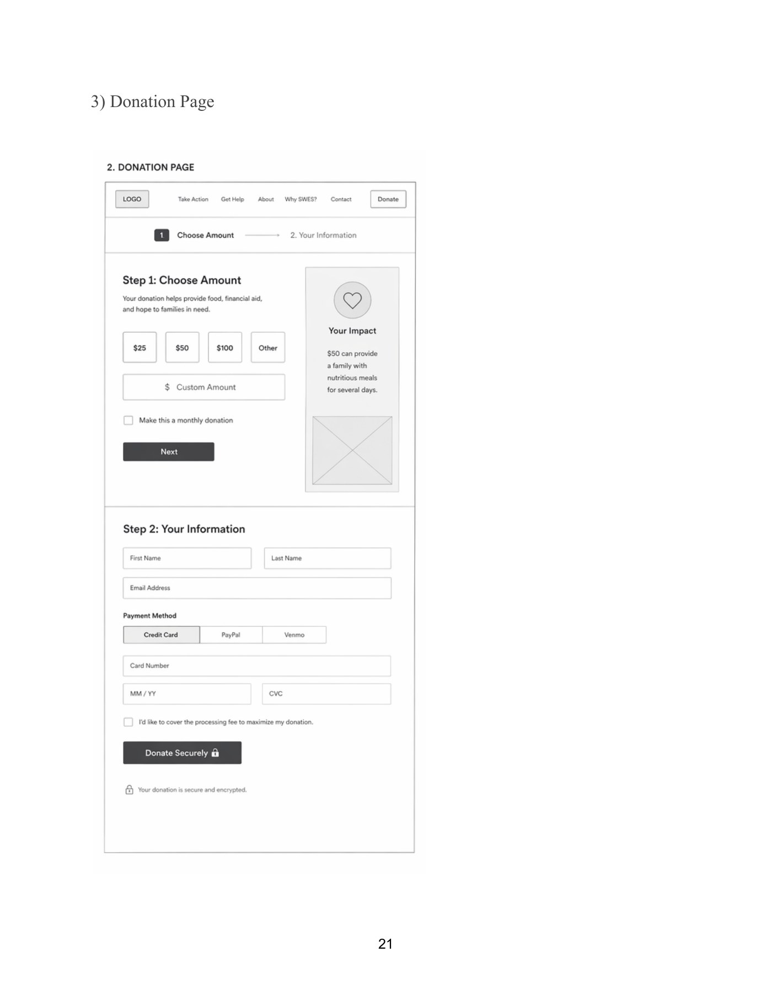
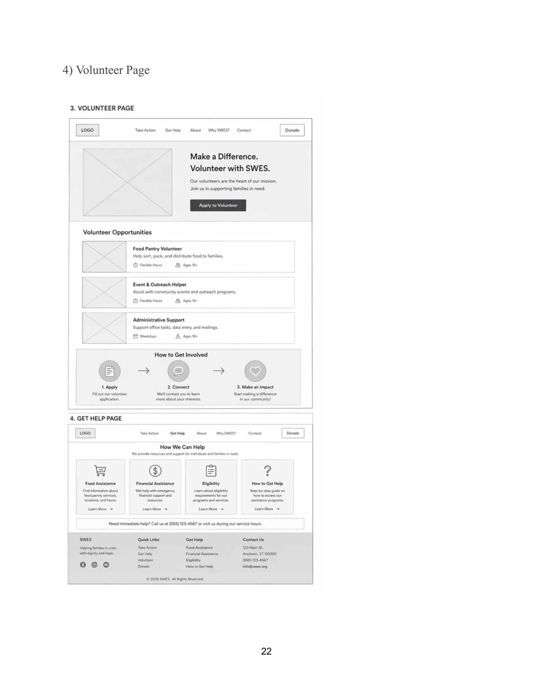
High-fidelity direction
The visual system pairs warm community photography with clear calls to action, generous spacing, and consistent information modules. The screens below represent the current design direction; content marked as placeholder remains subject to stakeholder review.
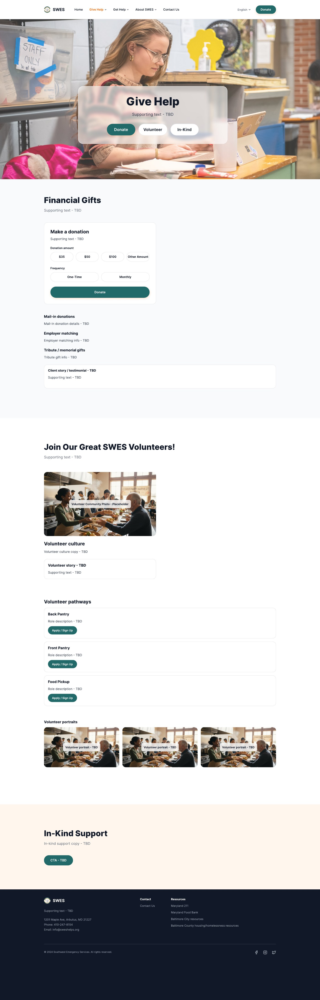
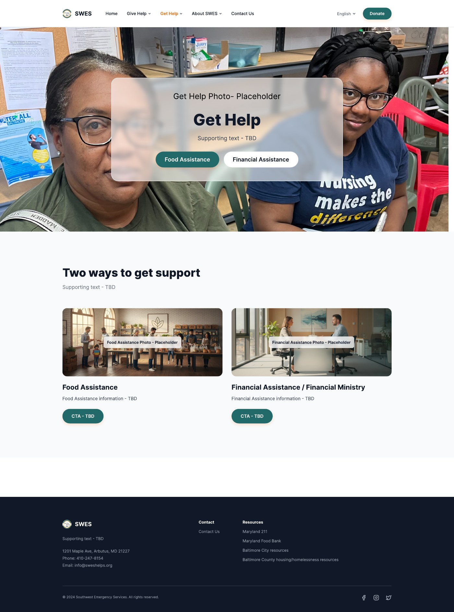
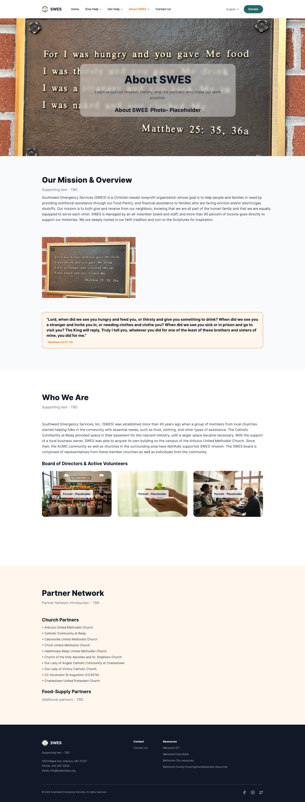
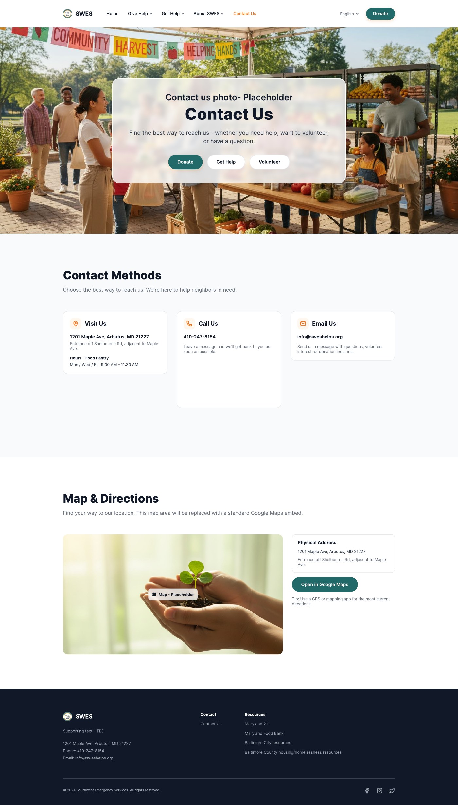
Reflection
This project reinforced that nonprofit UX problems are often rooted in information architecture, trust, task completion, and communication—not visual design alone. Research helped move the work beyond assumptions and toward the needs of people seeking assistance, donors, volunteers, and administrators.
It also highlighted the importance of accessibility and simplicity for an audience with varied digital confidence. The next phase is continued stakeholder iteration, refinement of content and flows, and implementation in WordPress.